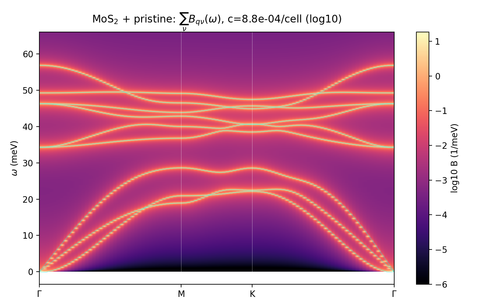

Contents
Null reference for the V$_S$ and O$_S$ runs. With no defect the self-energy vanishes and the spectral function collapses to the host dispersion,
$$
B_{\mathbf q\nu}(\omega)\;\xrightarrow{\;\pi_{\mathbf q\nu}\to0\;}\;\delta\big(\omega-\omega_{\mathbf q\nu}\big),
$$
broadened here only by the numerical $\eta=0.05$ meV. The figure below was produced by the identical code path as the defect maps (same Γ–M–K–Γ path, ω-mesh 0.03 meV, same cluster spectral density) with $V$ set to zero — so it doubles as a null test of the machinery: $\max|t|=0$ exactly, $\int B\,d\omega=0.9987$ (per-mode, finite-window), the resonance scan finds nothing, and the Krein ΔDOS is identically zero.

Host facts (DFPT-validated, used by both defect runs)
| Quantity | Value |
|---|---|
| Acoustic branches | ZA/TA/LA, top of acoustic manifold ≈ 28.5 meV |
| Acoustic–optical gap | ≈ 28.5–34 meV (no defect states appear here for either defect) |
| Γ opticals (FD / DFPT) | E″ 276.4/275.6 — E′ 373.1/376.4–378.2 — A₁′ 397.1/399.0 — ZO 458.2/456.0 cm⁻¹ |
| Top of spectrum | 56.8 meV (FD), 56.4 meV (DFPT path max) |
Three-way comparison
| pristine | V$_S$ | O$_S$ | |
|---|---|---|---|
| Line shape | δ-sharp (η only) | in-band resonance broadening | in-band broadening + local modes 59.2 / 66.2 meV above the band |
| Strongest features | — | a₁ 40.9, e 42.2/46.7, 34.5 meV resonances | 30.3, 40.9 meV resonances; e + a₁ local modes |
| $\bar\Gamma$, $\tau_{\min}$ @ $10^{12}$ cm⁻² | 0, ∞ | 2.3×10⁻³ meV, 37 ps | 1.1×10⁻³ meV, 49 ps |
Marginal compute cost: zero DFT — pure post-processing of the cached pristine force constants and cluster spectral density (~5 min on the login node).